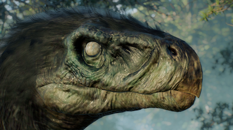
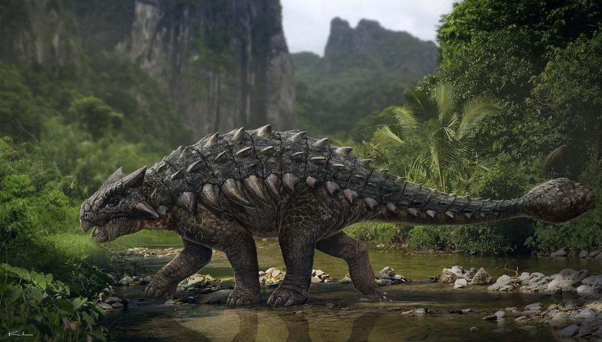

Therizinosaurus (/ˌθɛrəˌzɪnoʊˈsɔːrəs/; meaning 'scythe lizard') is a genus of very large therizinosaurid that lived in Asia during the Late Cretaceous period in what is now the Nemegt Formation around 70 million years ago. It contains a single species, Therizinosaurus cheloniformis. The first remains of Therizinosaurus were found in 1948 by a Mongolian field expedition at the Gobi Desert and later described by Evgeny Maleev in 1954. The genus is only known from a few bones, including gigantic manual unguals (claw bones), from which it gets its name, and additional findings comprising fore and hindlimb elements that have been discovered during the 1960s–1980s. 
Ankylosaurus[nb 1] is a genus of armored dinosaur. Its fossils have been found in geological formations dating to the very end of the Cretaceous Period, about 68–66 million years ago, in western North America, making it among the last of the non-avian dinosaurs. It was named by Barnum Brown in 1908; it is monotypic, containing only A. magniventris. The generic name means "fused lizard", and the specific name means "great belly". A handful of specimens have been excavated to date, but a complete skeleton has not been discovered. Though other members of Ankylosauria are represented by more extensive fossil material, Ankylosaurus is often considered the archetypal member of its group, despite having some unusual features. 